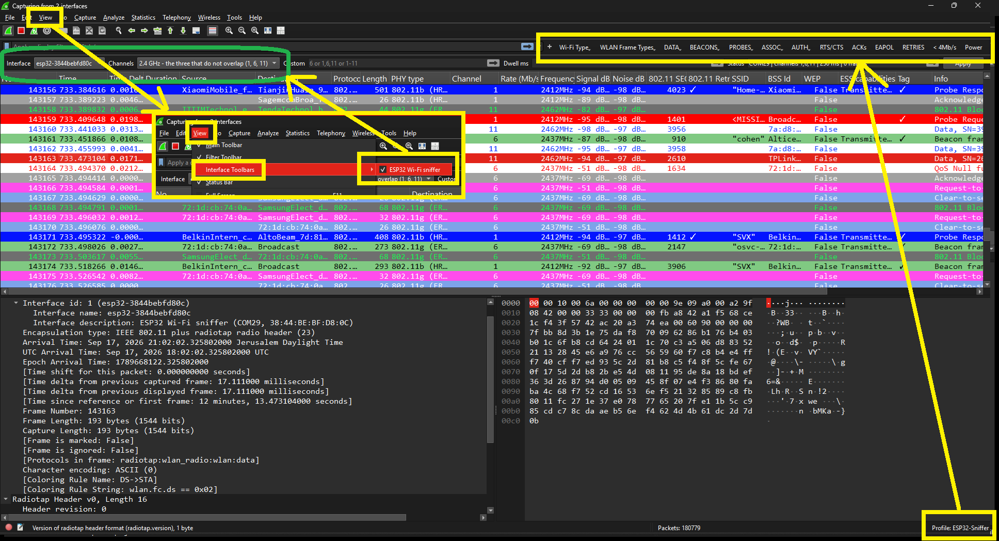
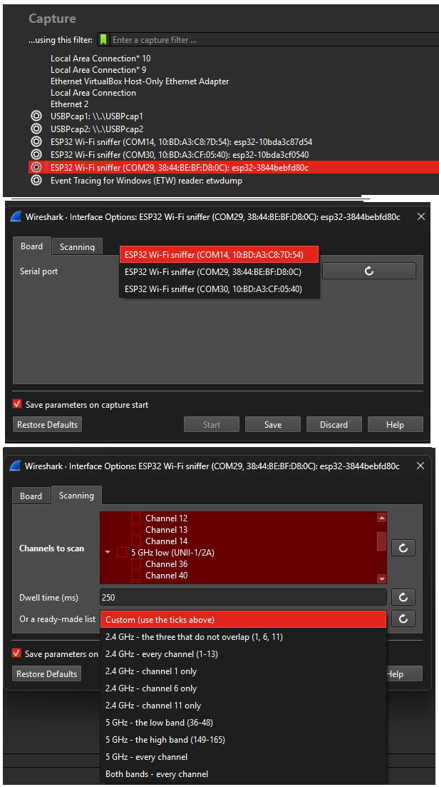
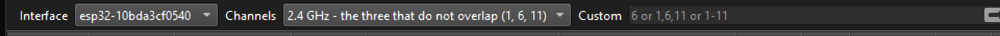

ESP32-C5 Wireshark Sniffer
Turn cheap ESP32-C5 boards into dual-band (2.4 GHz + 5 GHz) Wi-Fi sniffers that show up as ordinary capture interfaces inside Wireshark — with a toolbar for changing channels while the capture runs, and support for several boards at once.
Flash a board from this page
Plug an ESP32-C5 into a USB port using its native USB connector, then press the button. Nothing to install.
Chrome / Edge 89+, Firefox 151+, Chrome for Android. Not Safari.
BOOT button once. This is a quirk of the board, not the
firmware — it happened on two of the three boards this tool was developed against.

ESP32-Sniffer profile that installs with the tool.
What you get
| Each board is an interface | Plug in two or three and Wireshark lists them all. Capture from several at once and the frames merge into one window, each tagged with the board it came from. |
|---|---|
| Channels, your way | One channel (6), several (1,6,11), a range (1-11)
or a mix (1-13,36,149-165). Tick them in a list, or type them. |
| Change it live | View → Interface Toolbars gives you a channel picker and a dwell time that retune the board mid-capture, without restarting it. |
| Dual band | 2.4 GHz channels 1–14 and 5 GHz 36–177, on the same board. |
| Radio detail | Every frame carries a radiotap header: channel, frequency, signal and noise in dBm, so Wireshark’s Wi-Fi columns and filters all work. |
Set up the Wireshark side
Flashing the board is only half of it. The other half is one command.
1. Requirements
- Wireshark 4.2 or newer
- Python 3.8+ with
pyserial
2. Register the sniffer with Wireshark
git clone https://github.com/oshri-almog/esp32c5-wireshark-sniffer
cd esp32c5-wireshark-sniffer
pip install -r requirements.txt
python extcap/install.py
That installs a small launcher into Wireshark’s extcap folder and the
ESP32-Sniffer Wireshark profile (Wi-Fi columns, colouring rules and filter buttons
for beacons by Wi-Fi generation, probes, auth, RTS/CTS, ACKs, EAPOL and more). An existing profile
of that name is never overwritten.
3. Capture
- Open Wireshark. Press F5 if the board is not in the list yet.
- Double-click ESP32 Wi-Fi sniffer (COM14, …).
- Use the gear icon next to it to pick the serial port, the channels and the dwell time.
- Turn on View → Interface Toolbars → ESP32 Wi-Fi sniffer to change channels while capturing.


extcap\wireshark-fusion.bat, or set
QT_STYLE_OVERRIDE=Fusion once, and the boxes become visible again without giving up
dark mode.
Flashing without this page
If you would rather use a terminal, or you are on Safari:
# with ESP-IDF v5.5 or newer
cd firmware
idf.py set-target esp32c5
idf.py -p COM14 flash
# or flash the prebuilt merged image with esptool
esptool --chip esp32c5 --port COM14 write_flash 0x0 esp32c5-sniffer-1.0.0-merged.bin
Download the merged firmware image
(819 KiB, flashes at offset 0x0).
Troubleshooting
| Board missing from Wireshark | Press F5 in Wireshark. Check the board appears as a serial port
(USB VID 303A, PID 1001). |
|---|---|
| “Serial connection failed” | Only one program may hold a serial port. Close any serial monitor, and any second copy of the capture. |
| Random failures, ports renumbering | Almost always the USB link. Use a powered hub or a direct port, and a known-good data cable. A faulty cable and an unpowered hub cost this project hours of confusing, intermittent errors. |
| Nothing captured | Check the channel actually carries traffic, and that the board is not sitting in download mode (power-cycle it). |
| Frames marked malformed | A few per thousand is normal: the Wi-Fi driver reports some MIMO frames with metadata that does not match their contents. The rest of the capture is unaffected. |
How it works
Wi-Fi driver --callback--> ring buffer --writer task--> USB-Serial-JTAG
|
extcap plugin (Python) --pipe--> WiresharkThe firmware puts the radio in promiscuous mode and writes libpcap records straight to the board’s native USB port — nothing else shares that port, so the byte stream stays clean (logs go to UART instead). A frame is sent whole or dropped whole, so the stream never loses framing, and the host resynchronises on a marker if it ever does.